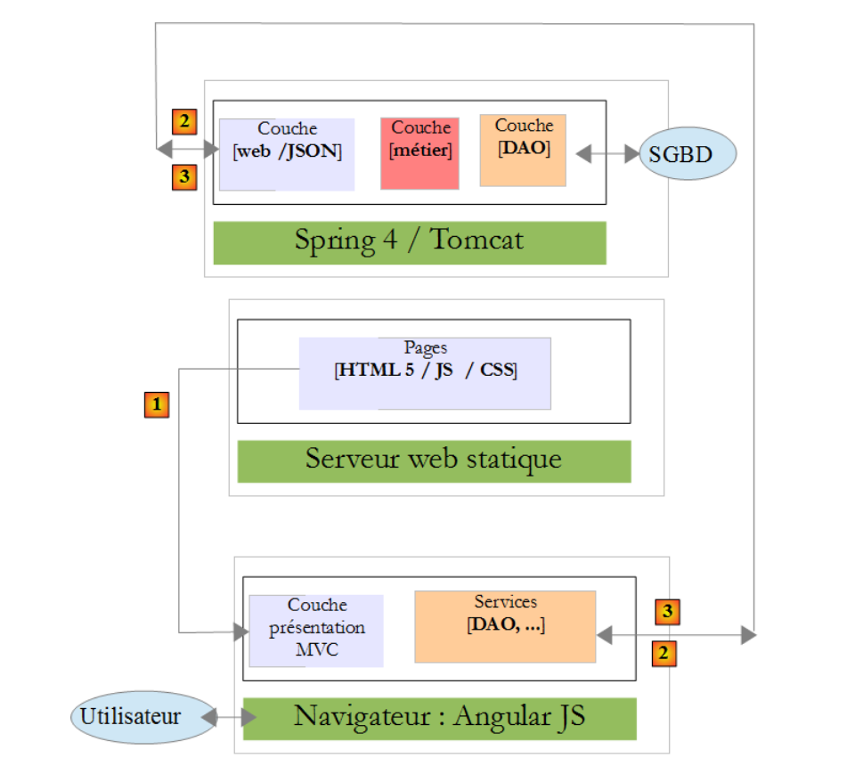
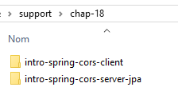
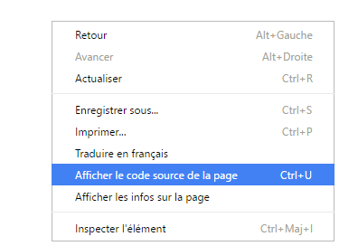
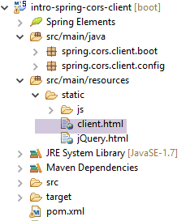
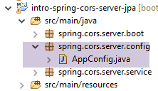
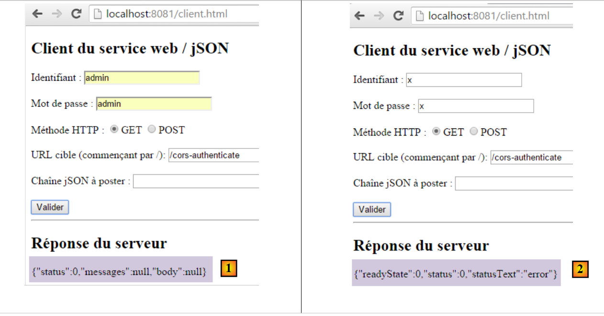

18. [Cours]：跨域访问管理
关键词：CORS（跨源资源共享）。
本章与TD的内容略有不同。保留本章是因为它介绍了Web编程和JavaScript编程。 需注意，本TD课程的目标之一，是介绍JEE开发中常用的概念，即基于Java框架的Web开发。 在此，我们对产品和类别数据库研究中使用的Web服务器进行了补充，使其能够接受跨域请求。
在文档 [Tutoriel AngularJS / Spring 4] 中，我们将开发一个客户端/服务器应用程序，其中客户端是一个 AngularJS 应用程序：
 |
- Angular 应用程序中的页面 HTML / CSS / JS 来自服务器 [1]；
- 在 [2] 中，服务 [dao] 向另一台服务器 [2] 发起了请求。 然而，运行 Angular 应用程序的浏览器禁止这种操作，因为这属于安全漏洞。该应用程序只能向其来源服务器（即 [1] 服务器）发起请求；
实际上，说浏览器禁止Angular应用程序向[2]服务器发送请求是不准确的。它实际上是向该服务器发送请求，询问其是否允许非本源客户端向其发送请求。 这种共享技术被称为 CORS（跨源资源共享）。[2] 服务器通过发送特定的 HTTP 头部来表示同意。
我们将构建以下架构：
 |
- 在 [1] 中，一个 Web 应用程序提供 HTML / jS 页面；
- 在 [2] 中，浏览器执行 HTML 页面中嵌入的 JavaScript，以查询安全 Web 服务 [3]；
18.1. Support
 |
本章的项目位于文件夹 [support / chap-18] 中。
18.2. 客户端项目
创建以下 Eclipse 项目：
 |
18.3. Maven配置
该项目是一个 Maven 项目，包含以下文件 [pom.xml]：
<project xmlns="http://maven.apache.org/POM/4.0.0" xmlns:xsi="http://www.w3.org/2001/XMLSchema-instance"
xsi:schemaLocation="http://maven.apache.org/POM/4.0.0 http://maven.apache.org/xsd/maven-4.0.0.xsd">
<modelVersion>4.0.0</modelVersion>
<groupId>istia.st.webjson</groupId>
<artifactId>intro-server-webjson-01</artifactId>
<version>0.0.1-SNAPSHOT</version>
<name>intro-server-webjson-01</name>
<description>démo spring mvc</description>
<parent>
<groupId>org.springframework.boot</groupId>
<artifactId>spring-boot-starter-parent</artifactId>
<version>1.2.7.RELEASE</version>
</parent>
<dependencies>
<dependency>
<groupId>istia.st.springdata</groupId>
<artifactId>intro-spring-data-01</artifactId>
<version>0.0.1-SNAPSHOT</version>
</dependency>
<dependency>
<groupId>org.springframework.boot</groupId>
<artifactId>spring-boot-starter-web</artifactId>
</dependency>
</dependencies>
<build>
<plugins>
<plugin>
<groupId>org.springframework.boot</groupId>
<artifactId>spring-boot-maven-plugin</artifactId>
</plugin>
<plugin>
<groupId>org.apache.maven.plugins</groupId>
<artifactId>maven-surefire-plugin</artifactId>
<version>2.18.1</version>
</plugin>
</plugins>
</build>
</project>
- 第 11-15 行：这是一个 Spring Boot 项目；
- 第23-26行：使用了[spring-boot-starter-web]依赖项，该依赖项自带Tomcat服务器和Spring MVC；
18.4. Spring配置
 |
用于配置 Spring 项目的 [WebConfig] 类如下：
package spring.cors.client.config;
import org.springframework.beans.factory.annotation.Autowired;
import org.springframework.boot.context.embedded.EmbeddedServletContainerFactory;
import org.springframework.boot.context.embedded.ServletRegistrationBean;
import org.springframework.boot.context.embedded.tomcat.TomcatEmbeddedServletContainerFactory;
import org.springframework.context.ApplicationContext;
import org.springframework.context.annotation.Bean;
import org.springframework.web.context.WebApplicationContext;
import org.springframework.web.servlet.DispatcherServlet;
import org.springframework.web.servlet.config.annotation.EnableWebMvc;
import org.springframework.web.servlet.config.annotation.ResourceHandlerRegistry;
import org.springframework.web.servlet.config.annotation.WebMvcConfigurerAdapter;
@EnableWebMvc
public class WebConfig extends WebMvcConfigurerAdapter {
// -------------------------------- [web] 层配置
@Autowired
private ApplicationContext context;
@Bean
public DispatcherServlet dispatcherServlet() {
DispatcherServlet servlet = new DispatcherServlet((WebApplicationContext) context);
return servlet;
}
@Bean
public ServletRegistrationBean servletRegistrationBean(DispatcherServlet dispatcherServlet) {
return new ServletRegistrationBean(dispatcherServlet, "/*");
}
@Bean
public EmbeddedServletContainerFactory embeddedServletContainerFactory() {
return new TomcatEmbeddedServletContainerFactory("", 8081);
}
@Override
public void addResourceHandlers(ResourceHandlerRegistry registry) {
registry.addResourceHandler("/*.html").addResourceLocations("classpath:/static/");
registry.addResourceHandler("/*.js").addResourceLocations("classpath:/static/js/");
}
}
- 第 15 行：该类配置了一个 Spring 项目 MVC；
- 第 16 行：该类继承自 [WebMvcConfigurerAdapter] 类，以重写其中某些方法；
- 第 18-36 行：我们之前已经遇到过这些 Bean，例如在第 13.5.3.1 节中。请注意，第 35 行中，Web 服务将在 8081 端口上运行；
- 第 38-42 行：[addResourceHandlers] 方法用于定义静态资源，即第 23 行中 [DispatcherServlet] 未处理的资源；
- 第40行：任何请求后缀为.html的资源，响应将返回请求中指定的文件，该文件位于项目类路径下的[static]文件夹中；
- 第 41 行：对任何后缀为 .js 的资源的请求，响应将返回请求中指定的 JavaScript 文件，该文件位于项目类路径的 [static/js] 文件夹中；
 |
18.5. jQuery与JavaScript入门
客户端的 HTML 页面将如下所示：
 |
该页面将包含在浏览器中执行的 JavaScript 代码（jS）。 我们将介绍一些JavaScript基础知识，以便理解该代码。客户端将通过jQuery和[https://jquery.com/]库调用HTTP，该库提供了许多简化JavaScript开发的函数。 我们创建一个静态文件 HTML [jQuery.html]，并将其放置在 [static] 文件夹中：
 |
该文件内容如下：
<!DOCTYPE html>
<html xmlns="http://www.w3.org/1999/xhtml">
<head>
<meta http-equiv="Content-Type" content="text/html; charset=utf-8" />
<title>JQuery-01</title>
<script type="text/javascript" src="/jquery-2.1.3.min.js"></script>
</head>
<body>
<h3>Rudiments de JQuery</h3>
<div id="element1">Elément 1</div>
</body>
</html>
- 第 6 行：导入 jQuery；
- 第 10-12 行：ID 为 [element1] 的页面元素。我们将对该元素进行操作。
我们需要下载文件 [jquery-2.1.3.min.js]。jQuery 的最新版本可在 URL [http://jquery.com/download/] 中找到：

将下载的文件放置在 [static / js] 文件夹中，并根据已安装的版本修改 HTML 文件的第 6 行。
完成上述操作后，使用Chrome浏览器调用静态视图[jQuery.html]：
 |
在 Google Chrome 中，执行 [Ctrl-Maj-I] 以显示开发工具 [3]。通过 [Console] [4] 选项卡可以执行 JavaScript 代码。 下文将提供需输入的 JavaScript 命令并附上说明。
|
：将所有 id 为 [element1] 的元素集合， 因此通常包含 0 或 1 个元素 因为在同一页面中不能存在两个相同的ID HTML。 |  |
|
：将文本 [blabla] 应用于集合中的所有元素 。这将导致 页面显示的内容 |  |
|
隐藏了集合中的元素。 文本 [blabla] 不再显示。 |  |
|
：重新显示集合。这让我们 看到 ID 为 [element1] 的元素 属性 CSS style='display: none;' 导致 导致该元素被隐藏。 | |
|
：显示集合中的元素。文本 [blabla] 再次显示。正是 CSS style='display : block;' 确保了这种 显示效果。 |  |
|
：为集合中的所有元素设置一个属性 。此处的属性为 [style]，其值为 [color: red]。文本 [blabla] 变为红色。 |  |
 | |
 |
需要注意的是，在整个操作过程中，浏览器的URL并未发生变化。没有与Web服务器进行任何交互。所有操作都在浏览器内部完成。现在，让我们查看该页面的源代码：
 |  |
这是初始文本。它完全没有反映我们在第10-12行对元素所做的操作。在调试JavaScript时，这一点非常重要。因此，查看已显示页面的源代码通常是徒劳的。
18.6. 应用程序的 JavaScript 代码
让我们回到将要调用 Web 服务 / jSON 的客户端应用程序页面：
 |
 |
该页面的代码 HTML 如下：
<!DOCTYPE html>
<html>
<head>
<meta charset="UTF-8">
<title>Spring MVC</title>
<script type="text/javascript" src="/jquery-2.1.3.min.js"></script>
<script type="text/javascript" src="/client.js"></script>
</head>
<body>
<h2>Client du service web / jSON</h2>
<form id="formulaire">
<!-- 用户名 -->
Identifiant :
<!-- -->
<input type="text" id="identifiant" name="identifiant" value="" />
<!-- 密码 -->
<br /> <br /> Mot de passe :
<!-- -->
<input type="text" id="password" name="password" value="" />
<!-- 方法HTTP -->
<br /> <br /> Méthode HTTP :
<!-- -->
<input type="radio" id="get" name="method" value="get"
checked="checked" />GET
<!-- -->
<input type="radio" id="post" name="method" value="post" />POST
<!-- URL -->
<br /> <br />URL cible (commençant par /): <input type="text"
id="url" size="30"><br />
<!-- 提交值 -->
<br /> Chaîne jSON à poster : <input type="text" id="posted"
size="50" />
<!-- 确认按钮 -->
<br /> <br /> <input type="button" value="Valider"
onclick="javascript:requestServer()"></input>
</form>
<hr />
<h2>Réponse du serveur</h2>
<div id="response"></div>
</body>
</html>
- 第 6 行：导入 jQuery 库；
- 第 7 行：导入我们将要编写的代码；
- 第15、19、26、29、31行：请注意页面组件的标识符[id]。JavaScript通过这些标识符引用这些组件；
代码 [client.js] 如下：
// 全局数据
var url;
var posted;
var response;
var method;
var baseUrl = 'http://localhost:8080';
var identifiant;
var password;
var authorizationHeader;
function requestServer() {
// 获取信息
var urlValue = url.val();
var postedValue = posted.val();
var identifiantValue = identifiant.val();
var passwordValue = password.val();
var method = document.forms[0].elements['method'].value;
authorizationCode = btoa(identifiantValue + ':' + passwordValue);
// 清除之前的响应
response.text("");
// 手动发起Ajax请求
if (method === "get") {
doGet(urlValue);
} else {
doPost(urlValue, postedValue);
}
}
function doGet(url) {
// 手动发起Ajax请求
$.ajax({
headers : {
'Authorization':'Basic '+authorizationCode
},
url : baseUrl + url,
type : 'GET',
dataType : 'text',
beforeSend : function() {
},
success : function(data) {
// 文本结果
response.text(data);
},
complete : function() {
},
error : function(jqXHR) {
// 系统错误
response.text(JSON.stringify(jqXHR.statusCode()));
}
})
}
function doPost(url, posted) {
// 手动发起Ajax请求
$.ajax({
headers : {
'Authorization':'Basic '+authorizationCode
},
url : baseUrl + url,
type : 'POST',
contentType : 'application/json; charset=UTF-8',
data : posted,
dataType : 'text',
beforeSend : function() {
},
success : function(data) {
// 文本结果
response.text(data);
},
complete : function() {
},
error : function(jqXHR) {
// 系统错误
response.text(JSON.stringify(jqXHR.statusCode()));
}
})
}
// 文档加载中
$(document).ready(function() {
// 获取页面组件的引用
identifiant = $("#identifiant");
password = $("#password");
url = $("#url");
posted = $("#posted");
response = $("#response");
});
- 第80-87行：jS代码在文档于浏览器中加载完毕后执行；
- 第 81-86 行：通过标识符 [id] 获取文档 HTML 中各元素的引用；
- 第2-9行：在文件jS中定义的所有函数中均可访问的全局变量；
- 第13行：获取用户输入的URL；
- 第14行：获取用户要提交的值（若为GET操作则为空）；
- 第 15 行：获取用户输入的用户名；
- 第16行：获取用户的密码；
- 第17行：获取用于请求第9行中URL的[get]或[post]方式：
- [document] 指浏览器加载的文档，即所谓的 DOM（文档对象模型），
- [document.forms[0]] 指文档中的第一个表单，一个文档可能包含多个表单。此处仅有一个，
- [document.forms[0].elements['method']] 指表单中具有 [name='method'] 属性的元素。共有两个：
<input type="radio" id="get" name="method" value="get" checked="checked" />GET
<input type="radio" id="post" name="method" value="post" />POST
- （续）
- [document.forms[0].elements['method'].value] 是将要提交给具有 [name='method'] 属性的组件的值。 已知提交的值是被选中单选按钮的 [value] 属性的值。因此，这里将是 ['get', 'post'] 字符串之一；
- 第 18 行：生成标识符:密码字符串的 Base74 编码。该编码字符串将用于 HTTP [Authorization] 头部，我们将将其发送至服务器以验证请求；
- 第22-26行：根据要使用的HTTP方法，执行[doGet]或[doPost]方法；
- 方法 jQuery [$.ajax] 会调用 HTTP；
- 第32-34行：调用要求包含HTTP或[Authorization: Basic code]标头的服务器；
- 第35行：用户将输入URL类型的[/cors-getAllCategories,/cors-addProduits, ...]。因此，需将这些URL与第6行服务器提供的URL进行组合；
- 第36行：应使用HTTP方法；
- 第37行：服务器返回jSON。将结果类型指定为[text]，以便按接收时的原样显示；
- 第42行：显示服务器的文本响应；
- 第 48-49 行：显示可能出现的错误信息；
- 第 53 行：方法 [doPost] 接收第二个参数，即待提交的值；
- 第 61 行：指定要提交的值将以字符串形式提交（jSON）；
18.7. 客户端执行
客户端应用程序是一个由以下可执行类 [Boot] 启动的 Spring Boot 应用程序：
 |
package spring.cors.client.boot;
import org.springframework.boot.SpringApplication;
import spring.cors.client.config.WebConfig;
public class Boot {
public static void main(String[] args) {
SpringApplication.run(WebConfig.class, args);
}
}
- 第 10 行：方法 [SpringApplication.run] 使用配置文件 [WebConfig]。页面 [client.html] 将部署到项目类路径中的 Tomcat 服务器上；
18.8. L'URL [/getAllCategories]
我们启动：
- Web/JSON服务器，端口为8080；
- 该服务器的客户端在8081端口上运行；
然后我们请求 URL [http://localhost:8081/client.html] [1]：
 |
- 在 [2] 上，我们对 URL [http://localhost:8080/getAllCategories] 执行 GET 操作；
我们未收到服务器的响应。查看 Chrome 开发者控制台（Ctrl+Shift+I）时，发现了一个错误：
 |
- 在 [1] 时，当前处于 [Network] 标签页；
- 在 [2] 标签页中，可以看到已发出的请求 HTTP 并非 [GET]，而是 [OPTIONS]。 对于跨域请求，浏览器会通过发送请求 HTTP [OPTIONS] 向服务器验证是否满足若干条件。 在此情况下，请求即为圆点标记所指向的 [5-6]；
- 在 [5] 中，浏览器询问是否可以通过 GET 访问目标 URL。 [Access-Control-Request-Method]请求的头部要求响应包含HTTP [Access-Control-Allow-Methods]头部，表明所请求的方法被接受；
- 在 [6] 中，浏览器发送了 HTTP [Origin: http://localhost:8081] 头部。 该标头要求在 HTTP [Access-Control-Allow-Origin] 标头中返回响应，表明已接受指定的源；
- 在 [7] 中，浏览器询问是否接受 HTTP、[accept] 和 [authorization] 这三个标头。 请求头 [Access-Control-Request-Headers] 等待包含 HTTP 和 [Access-Control-Allow-Headers] 响应头的响应，表明所请求的头部已被接受；
- 出现 [3] 错误。点击图标后，出现 [4] 错误；
- 在 [4] 中，消息提示服务器未发送 HTTP [Access-Control-Allow-Origin] 头部，该头部用于指示是否接受请求来源；
- 在 [8] 中，可以发现服务器确实未发送该标头。因此，浏览器拒绝执行最初请求的 HTTP GET 请求；
我们需要修改Web服务器 / jSON。
18.9. 新的 Web 服务 / json
我们创建一个新的 Maven 项目 [intro-spring-cors-server-jpa]：
 |  |
18.9.1. Maven配置
新 Web 服务的 Maven 配置如下：
<project xmlns="http://maven.apache.org/POM/4.0.0" xmlns:xsi="http://www.w3.org/2001/XMLSchema-instance"
xsi:schemaLocation="http://maven.apache.org/POM/4.0.0 http://maven.apache.org/xsd/maven-4.0.0.xsd">
<modelVersion>4.0.0</modelVersion>
<groupId>istia.st.cors</groupId>
<artifactId>spring-cors-server-jpa</artifactId>
<version>0.0.1-SNAPSHOT</version>
<name>spring-cors-server-jpa</name>
<description>démo spring cors</description>
<properties>
<project.build.sourceEncoding>UTF-8</project.build.sourceEncoding>
<java.version>1.8</java.version>
</properties>
<parent>
<groupId>org.springframework.boot</groupId>
<artifactId>spring-boot-starter-parent</artifactId>
<version>1.2.7.RELEASE</version>
</parent>
<dependencies>
<dependency>
<groupId>istia.st.spring.security</groupId>
<artifactId>intro-spring-security-server-01</artifactId>
<version>0.0.1-SNAPSHOT</version>
</dependency>
</dependencies>
<!-- 插件 -->
<build>
<plugins>
<plugin>
<groupId>org.springframework.boot</groupId>
<artifactId>spring-boot-maven-plugin</artifactId>
</plugin>
<plugin>
<groupId>org.apache.maven.plugins</groupId>
<artifactId>maven-surefire-plugin</artifactId>
<version>2.18.1</version>
</plugin>
</plugins>
</build>
</project>
- 第 23-27 行：我们利用安全 Web 服务器 / json 存档，整合了迄今为止所有已完成的工作成果；
18.9.2. Spring 配置
配置类 [AppConfig] 如下：
 |
package spring.cors.server.config;
import org.springframework.context.annotation.Bean;
import org.springframework.context.annotation.ComponentScan;
import org.springframework.context.annotation.Configuration;
import org.springframework.context.annotation.Import;
import spring.security.config.SecurityConfig;
@Configuration
@ComponentScan(basePackages = { "spring.cors.server.service" })
@Import({ SecurityConfig.class })
public class AppConfig {
// 跨域请求
@Bean
public boolean isCorsEnabled() {
return true;
}
}
- 第 10 行：该类是 Spring 配置类；
- 第 11 行：其他 Spring 组件位于 [spring.cors.server.service] 包中；
- 第16-19行：我们创建了一个名为[isCorsEnabled]的Spring组件，用于控制是否接受服务器域外的客户端；
18.9.3. [AbstractCorsController]类
[AbstractCorsController] 类将作为该应用程序所有控制器的父类：
 |
其代码如下：
package spring.cors.server.service;
import javax.servlet.http.HttpServletResponse;
import org.springframework.beans.factory.annotation.Autowired;
public abstract class AbstractCorsController {
@Autowired
private boolean isCorsEnabled;
// 向客户端发送选项
public void setHeaders(String origin, HttpServletResponse response) {
// 是否允许跨源请求？
if (!isCorsEnabled || origin == null || !origin.startsWith("http://localhost")) {
return;
}
// 设置 CORS 头部
response.addHeader("Access-Control-Allow-Origin", origin);
// 允许某些标头
response.addHeader("Access-Control-Allow-Headers", "accept, authorization");
// 允许 GET
response.addHeader("Access-Control-Allow-Methods", "GET");
}
}
- 第 7 行：类 [CorsController] 是抽象类，因为它设计用于被扩展而非实例化；
- 第13-24行：方法 [setHeaders] 将跨域请求所需的标头 HTTP 添加到发给客户端的响应 [HttpServletResponse response]（第13行）中；
- 第 33 行：方法 [/setHeaders] 接受以下参数：
- 跨域请求的 HTTP [Origin] 头部中包含的字符串 [origin]：
在此情况下，第 13 行中的参数 [origin] 的值将为 [http://localhost:8081]。 如果请求中不包含 HTTP [Origin] 头部，则会设法获取 [origin==null]；
- （续）
- 对象 [HttpServletResponse response] 将被返回给发起请求的客户端；
这两个参数由 Spring 注入；
- 第15-175行：如果应用程序配置为接受跨域请求，且请求发起方发送了HTTP [Origin]头部，并且该源头以[http://localhost]开头， 则接受跨域请求，否则拒绝；
- 第 19 行：如果客户端位于 [http://localhost:port] 域中，则发送 HTTP 标头：
这意味着服务器接受该客户端的来源；
- 第 21 行：我们在 HTTP [OPTIONS] 请求中标记了两个特殊的 HTTP 标头：
针对 HTTP 和 [Access-Control-Request-X] 这两个请求头，服务器返回了 HTTP 和 [Access-Control-Allow-X] 请求头，其中指明了允许的内容。 第20-23行仅重复客户端的请求，以表明该请求已被接受；
18.9.4. 控制器 [MyControllerWithHttpOptions]
为了避免修改第13.5.3节中讨论的非安全Web服务器 / jSON [intro-server-webjson-01]， 我们将创建一个新的控制器，当该不安全的服务器处理 URL [/url] 时， 新控制器将处理 URL 和 [/cors-url]，而 URL 将接受跨域请求。
类 [MyControllerWithHttpOptions] 是用于处理类型为 [OPTIONS] 的 HTTP 请求的控制器：
 |
package spring.cors.server.service;
import javax.servlet.http.HttpServletRequest;
import javax.servlet.http.HttpServletResponse;
import org.springframework.stereotype.Controller;
import org.springframework.web.bind.annotation.PathVariable;
import org.springframework.web.bind.annotation.RequestHeader;
import org.springframework.web.bind.annotation.RequestMapping;
import org.springframework.web.bind.annotation.RequestMethod;
import com.fasterxml.jackson.core.JsonProcessingException;
@Controller
public class MyControllerWithHttpOptions extends AbstractCorsController {
@RequestMapping(value = "/cors-getAllCategories", method = RequestMethod.OPTIONS)
public void getAllCategories(@RequestHeader(value = "Origin", required = false) String origin,
HttpServletResponse httpServletResponse){
// 标头 CORS
setHeaders(origin, httpServletResponse);
}
...
- 第 14 行：该类是一个 Spring 控制器 MVC；
- 第 15 行：类 [MyControllerWithHttpOptions] 继承了我们刚刚描述的类 [AbstractCorsController]；
- 第 17-18 行：方法 [getAllCategories] （第18行）在通过方法HTTP [OPTIONS]调用时，处理URL ["/cors-getAllCategories"]；
- 第18行：方法[getAllCategories]接受两个参数：
- [@RequestHeader(value = "Origin", required = false) String origin] 用于获取标题的值 HTTP [Origin:http://localhost:8081]（若存在）。 在此示例中，参数 [String origin] 将接收值 [http://localhost:8081]。该标头并非必填项 [required = false]。 当该参数不存在时，参数 [String origin] 的值将变为 null；
- [HttpServletResponse httpServletResponse]：将发送给客户端的响应；
- 第 21 行：发送允许跨域请求的标头 HTTP。方法 [setHeaders] 在父类 [AbstractCorsController] 中定义；
对于第13.5.3节中讨论的、由Web服务器/jSON（非安全）[intro-server-webjson-01]所暴露的所有URL，均采用此处理方式。 当该服务暴露 URL 和 [/url] 时，上述 [MyControllerWithHttpOptions] 类将暴露 URL 和 [/cors-url]。
18.9.5. 控制器 [MyControllerWithCors]
 |
类 [MyControllerWithCors] 是处理 HTTP 类型中 [GET] 和 [POST] 请求的控制器：
package spring.cors.server.service;
import javax.servlet.http.HttpServletRequest;
import javax.servlet.http.HttpServletResponse;
import org.springframework.beans.factory.annotation.Autowired;
import org.springframework.web.bind.annotation.PathVariable;
import org.springframework.web.bind.annotation.RequestHeader;
import org.springframework.web.bind.annotation.RequestMapping;
import org.springframework.web.bind.annotation.RequestMethod;
import org.springframework.web.bind.annotation.ResponseBody;
import com.fasterxml.jackson.core.JsonProcessingException;
import spring.webjson.service.MyController;
@Controller
public class MyControllerWithCors extends AbstractCorsController {
// Spring 依赖项
@Autowired
private MyController myController;
...
@RequestMapping(value = "/cors-getAllCategories", method = RequestMethod.GET, produces = "application/json; charset=UTF-8")
@ResponseBody
public String getAllCategories(@RequestHeader(value = "Origin", required = false) String origin,
HttpServletResponse httpServletResponse) throws JsonProcessingException {
// 响应
return myController.getAllCategories();
}
...
- 第 17 行：类 [MyControllerWithCors] 是 Spring 控制器 MVC
- 第 18 行：它继承自类 [AbstractCorsController]；
- 第21-22行：注入Web服务器控制器[MyController] / 未受保护的jSON / 第13.5.3节中讨论的[intro-server-webjson-01]；
- 第25-27行：方法[getAllCategories]处理URL [/cors-getAllCategories] （第28行），当通过方法HTTP [GET]调用时；
- 第26行：方法[getAllCategories]的结果将发送给客户端。 该结果是一个 jSON 流（第 27 行的 [produces] 属性与第 25 行结果的 [String] 类型）；
- 第27行：该方法接收的参数与我们刚刚研究的控制器[MyControllerWithHttpOptions]中的方法[getAllCategories]相同；
- 第30行：调用方法[myController.getAllCategories()]发送响应；
最终，由不安全的服务器上的 [myController.getAllCategories()] 方法发送响应。我们只是在响应中添加了跨域请求所需的头部信息。
对于第 13.5.3 节中讨论的非安全 Web 服务器 / jSON 所暴露的所有 URL 方法，均采用此处理方式。 当该服务暴露 URL 和 [/url] 时，上述 [MyControllerWithCors] 类将暴露 URL 和 [/cors-url]。
跨域请求将按以下方式进行：
- 客户端的代码 JS 请求URL [/cors-url]，同时发送包含 HTTP GET 或 POST 的请求；
- 执行此代码的浏览器会拦截该请求，并首先请求URL [/cors-url]，并使用请求 HTTP OPTIONS 来验证目标 Web 服务是否接受跨域请求；
- [MyControllerWithHttpOptions] 控制器中的某个方法会发送浏览器所期望的跨域头部；
- 随后，浏览器使用 HTTP、GET 或 POST 请求，对初始的 URL 进行 [/cors-url] 请求；
- 随后，控制器[MyControllerWithCors]的某个方法向其作出响应；
18.9.6. 测试
项目 [intro-spring-cors-server-jpa] 的启动类如下：
 |
package spring.cors.server.boot;
import org.springframework.boot.SpringApplication;
import spring.cors.server.config.AppConfig;
public class Boot {
public static void main(String[] args) {
SpringApplication.run(AppConfig.class, args);
}
}
- 第 10 行：静态方法 [SpringApplication.run] 通过 Spring 配置 [AppConfig] 被执行。由于该配置，项目归档中内置的 Tomcat 服务器被启动，并在此之上部署了 Web 应用程序 [intro-spring-cors-server-jpa]。 项目归档中包含的非安全服务器 Web 应用程序 [intro-server-webjson-01] 也部署到了该服务器上。由于项目 [intro-spring-security-server-01] 同样包含在归档中，最终将暴露两种类型的 URL：
- 安全 Web 服务：/url；
- 支持跨域请求的 Web 服务：/cors-url；
现在，我们已准备好进行新一轮测试。 我们启动了Web服务的新版本，却发现问题依然存在。没有任何变化。如果在下文第7行添加控制台输出，该输出将永远不会显示，这表明[MyControllerWithHttpOptions]类中的[getAllCategories]方法从未被调用；
@Controller
public class MyControllerWithHttpOptions extends AbstractCorsController {
@RequestMapping(value = "/cors-getAllCategories", method = RequestMethod.OPTIONS)
public void getAllCategories(@RequestHeader(value = "Origin", required = false) String origin,
HttpServletResponse httpServletResponse){
System.out.println(un_texte) ;
// CORS 头部
setHeaders(origin, httpServletResponse);
}
经过一番研究，我们发现默认情况下，Spring MVC 会自行处理 HTTP 和 [OPTIONS] 命令。 因此，响应始终由 Spring 处理，而绝不会调用上文第 5 行中的 [getAllCategories] 方法。Spring MVC 的这种默认行为是可以更改的。我们修改现有的 [AppConfig] 类：
 |
package spring.cors.server.config;
import javax.annotation.PostConstruct;
import org.springframework.beans.factory.annotation.Autowired;
import org.springframework.context.annotation.Bean;
import org.springframework.context.annotation.ComponentScan;
import org.springframework.context.annotation.Configuration;
import org.springframework.context.annotation.Import;
import org.springframework.web.servlet.DispatcherServlet;
import spring.security.config.SecurityConfig;
@Configuration
@ComponentScan(basePackages = { "spring.cors.server.service" })
@Import({ SecurityConfig.class })
public class AppConfig {
// 跨域请求
@Bean
public boolean isCorsEnabled() {
return true;
}
@Autowired
private DispatcherServlet dispatcherServlet;
@PostConstruct
public void init() {
// 应用程序自行处理请求 HTTP [OPTIONS]
dispatcherServlet.setDispatchOptionsRequest(true);
}
}
- 第 25-26 行：注入处理客户端请求的 Bean [dispatcherServlet]。该 Bean 已在第 13.5.3 节中讨论的未受保护的 Web 服务器配置 / jSON 中定义；
- 第28-29行：一旦[AppConfig]类被实例化且Spring注入完成，[init]方法（第29行）即会被执行。因此，当该方法执行时，第26行的字段已初始化；
- 第 31 行：配置 Bean [dispatcherServlet]，使其允许 Web 应用程序自行处理命令 HTTP 和 [OPTIONS]；
我们使用此新配置重新进行测试。结果如下：
 |
- 在 [1] 中，我们看到有两个请求 HTTP 指向 URL [http://localhost:8080/cors-getAllCategories]；
- 在 [2] 中，请求 [OPTIONS]；
- 在 [3] 中，包含我们在服务器响应中刚刚配置的三个 HTTP 头部；
现在让我们来看第二个请求：
 |
- 在 [1] 中，即所分析的请求；
- 在 [2] 中，这是请求 GET。 通过第一个请求 [OPTIONS]，浏览器已收到其请求的信息。现在，它执行最初请求的 [GET]；
- 在 [3] 中，服务器返回响应；
- 在 [4] 中，服务器发送了 jSON；
- [5]，发生错误；
- 在 [6] 中，错误消息；
这里发生的情况更难解释。服务器的响应 [3] 是正常的 [HTTP/1.1 200 OK]。 因此，我们理应已获取到所请求的文档。可能的情况是，服务器确实发送了文档，但浏览器阻止了其使用，因为它要求针对请求 GET，响应中也必须包含标头 HTTP [Access-Control-Allow-Origin:http://localhost:8081]。
因此，我们需要修改控制器 [MyControllerWithCors]，使其同样为跨域请求发送必要的头部信息：
@RequestMapping(value = "/cors-getAllCategories", method = RequestMethod.GET, produces = "application/json; charset=UTF-8")
@ResponseBody
public String getAllCategories(@RequestHeader(value = "Origin", required = false) String origin,
HttpServletResponse httpServletResponse) throws JsonProcessingException {
// 标头 CORS
setHeaders(origin, httpServletResponse);
// 响应
return myController.getAllCategories();
}
- 第 6 行：响应中已包含跨域请求所需的头部；
修改后，结果如下：
 |
我们确实成功获取了分类列表。
18.10. 其他URL [GET]
在控制器 [MyControllerWithCors, MyControllerWithHttpOptions] 中， 处理通过 [GET] 请求的 URL 的操作代码，遵循了之前处理 URL 和 [/cors-getAllCategories] 的操作模式。 读者可查阅本文档随附的示例代码。以下是针对 URL 和 [/cors-getAllProduits] 的示例：
在 [MyControllerWithHttpOptions] 中
@RequestMapping(value = "/cors-getAllProduits", method = RequestMethod.OPTIONS)
public void getAllProduits(@RequestHeader(value = "Origin", required = false) String origin,
HttpServletResponse httpServletResponse) {
// 头信息 CORS
setHeaders(origin, httpServletResponse);
}
在 [MyControllerWithCors] 中
@RequestMapping(value = "/cors-getAllProduits", method = RequestMethod.GET, produces = "application/json; charset=UTF-8")
@ResponseBody
public String getAllProduits(@RequestHeader(value = "Origin", required = false) String origin,
HttpServletResponse httpServletResponse) throws JsonProcessingException {
// 头部 CORS
setHeaders(origin, httpServletResponse);
// 响应
return myController.getAllProduits();
}
得到的结果如下：
 |
18.11. URL[POST]
让我们来看以下情况：
 |
- 将 POST [1] 映射到 URL [2]；
- 在 [3] 中，该值已发布。这是一个字符串 jSON；
- 总而言之，我们试图创建一个名为 [categorie2] 的类别；
目前我们不修改任何代码。所得结果如下：
 |
- 在 [1] 中，与 [GET] 的请求类似，浏览器会发起一个 [OPTIONS] 的请求；
- 在 [2] 时，它会为 [POST] 请求请求访问授权。此前是 [GET]；
- 在 [3] 阶段，它请求授权发送 HTTP 和 [accept, authorization, content-type] 这两个头部。此前仅包含前两个头部；
- 在 [4] 中，Web 服务未授予所有请求的权限，从而导致 [5] 错误；
我们将方法 [AbstractController.sendHeaders] 修改如下：
package spring.cors.server.service;
import javax.servlet.http.HttpServletResponse;
import org.springframework.beans.factory.annotation.Autowired;
public abstract class AbstractCorsController {
@Autowired
private boolean isCorsEnabled;
// 向客户端发送选项
public void setHeaders(String origin, HttpServletResponse response) {
// 允许 CORS 吗？
if (!isCorsEnabled || origin == null || !origin.startsWith("http://localhost")) {
return;
}
// 设置标头 CORS
response.addHeader("Access-Control-Allow-Origin", origin);
// 允许某些标头
response.addHeader("Access-Control-Allow-Headers", "accept, authorization, content-type");
// 允许 GET 和 POST
response.addHeader("Access-Control-Allow-Methods", "GET, POST");
}
}
- 第 21 行：添加了标头 HTTP [Content-Type]（区分大小写）；
- 第 23 行：添加了方法 HTTP [POST]；
这样一来，[POST]方法将与[GET]请求以相同的方式处理。以下是URL和[/cors-addArticles]的示例：
在 [MyControllerWithCors] 中
@RequestMapping(value = "/cors-addCategories", method = RequestMethod.POST, consumes = "application/json; charset=UTF-8", produces = "application/json; charset=UTF-8")
@ResponseBody
public String addCategories(HttpServletRequest request,
@RequestHeader(value = "Origin", required = false) String origin, HttpServletResponse httpServletResponse)
throws JsonProcessingException {
// CORS 标头
setHeaders(origin, httpServletResponse);
// 响应
return myController.addCategories(request);
}
在 [MyControllerWithHttpOptions] 中
@RequestMapping(value = "/cors-addCategories", method = RequestMethod.OPTIONS)
public void addCategories(HttpServletRequest request,
@RequestHeader(value = "Origin", required = false) String origin, HttpServletResponse httpServletResponse)
throws JsonProcessingException {
// CORS 报头
setHeaders(origin, httpServletResponse);
}
所得结果如下：
 |
类别 [categorie2] 已成功添加到数据库中。SGBD 为其分配了主键 1729。
18.12. 控制器 [AuthenticateCorsController]
 |
控制器 [AuthenticateCorsController] 用于提供URL [/cors-authenticate]，该控制器通过跨域请求调用已存在的 URL [/authenticate]。其代码如下：
package spring.cors.server.service;
import javax.servlet.http.HttpServletResponse;
import org.springframework.beans.factory.annotation.Autowired;
import org.springframework.stereotype.Controller;
import org.springframework.web.bind.annotation.RequestHeader;
import org.springframework.web.bind.annotation.RequestMapping;
import org.springframework.web.bind.annotation.RequestMethod;
import org.springframework.web.bind.annotation.ResponseBody;
import com.fasterxml.jackson.core.JsonProcessingException;
import spring.security.service.AuthenticateController;
@Controller
public class AuthenticateCorsController extends AbstractCorsController {
@Autowired
private AuthenticateController authenticateController;
@RequestMapping(value = "/cors-authenticate", method = RequestMethod.GET)
@ResponseBody
public String authenticate(@RequestHeader(value = "Origin", required = false) String origin,
HttpServletResponse response) throws JsonProcessingException {
// 头部 CORS
setHeaders(origin, response);
// 原始方法
return authenticateController.authenticate();
}
@RequestMapping(value = "/cors-authenticate", method = RequestMethod.OPTIONS)
public void corsAuthenticate(@RequestHeader(value = "Origin", required = false) String origin,
HttpServletResponse response) {
// CORS 头
setHeaders(origin, response);
}
}
以下是两个示例：
 |
- 显示的答案由以下代码 jS 生成：
function doGet(url) {
// 手动发起 Ajax 请求
$.ajax({
headers : {
'Authorization':'Basic '+authorizationCode
},
url : baseUrl + url,
type : 'GET',
dataType : 'text',
beforeSend : function() {
},
success : function(data) {
// 文本结果
response.text(data);
},
complete : function() {
},
error : function(jqXHR) {
// 系统错误
response.text(JSON.stringify(jqXHR.statusCode()));
}
})
}
- 响应 [1] 由函数 [success] 的第 14 行显示；
- 响应 [2] 由函数 [error] 的第 20 行显示。 函数 [JSON.stringify] 创建了对象 jSON 的字符串 [jqXHR.statusCode()]，该对象封装了发生的错误。此对象提供的信息很少。 可以利用 [jqXHR] 对象的其他方法来获取信息，例如服务器返回的 HTTP 头部；
18.13. Conclusion
我们的应用程序现已支持跨域请求。这些请求可通过在 [AppConfig] 类中进行配置来启用或禁用：
@ComponentScan(basePackages = { "spring.cors.server.service" })
@Import({ SecurityConfig.class })
public class AppConfig {
// 跨域请求
@Bean
public boolean isCorsEnabled() {
return true;
}
@Autowired
private DispatcherServlet dispatcherServlet;
@PostConstruct
public void init() {
// 应用程序自行处理请求 HTTP [OPTIONS]
dispatcherServlet.setDispatchOptionsRequest(true);
}
}